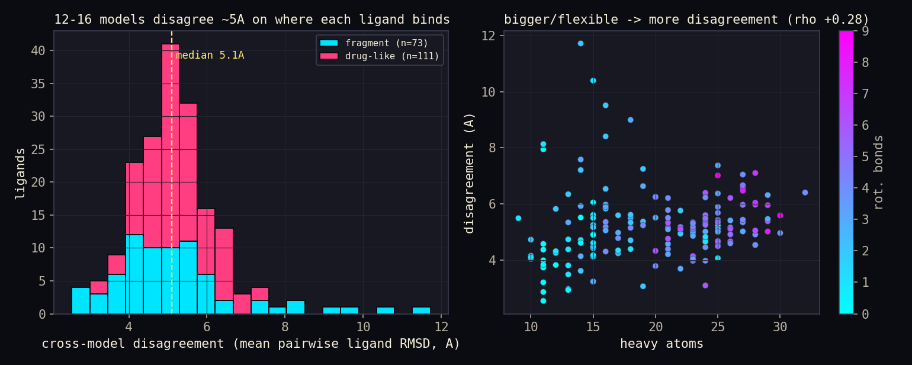
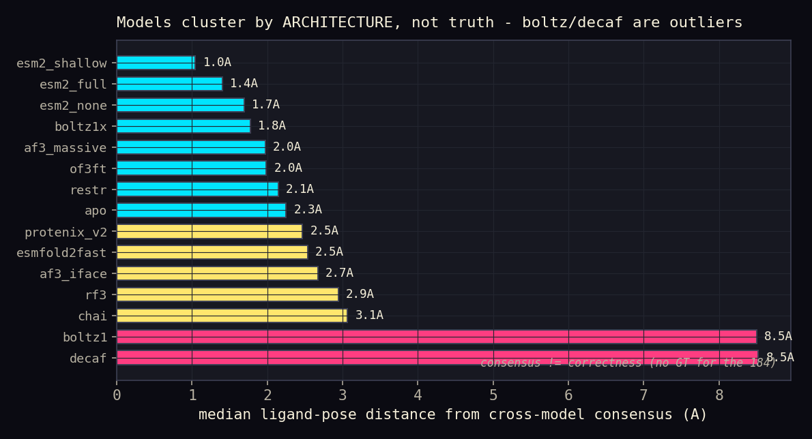
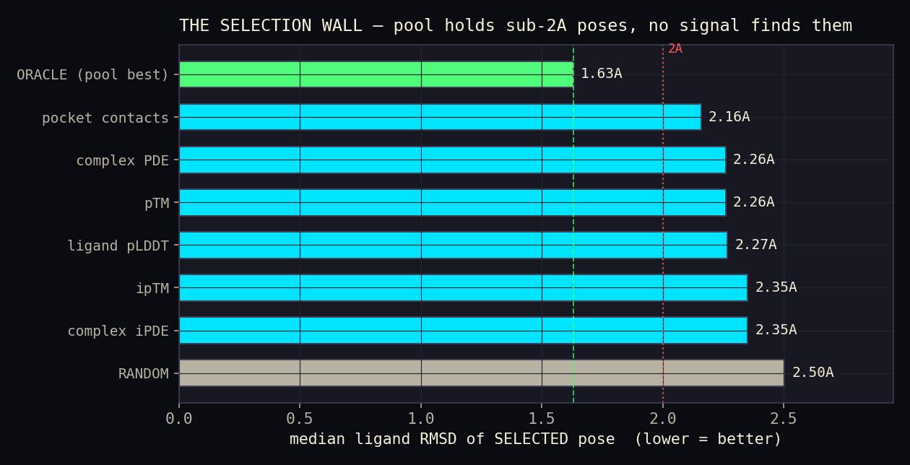
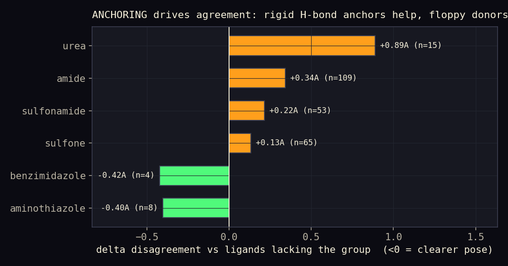

What went wrong — a per-pose autopsy of all 184
The challenge is over. Best submission prot_rescue8 · LDDT-PLI 0.564 · rank 2 (leader 0.5725). This report dissects every one of the 184 test ligands across 12-16 structure predictors to answer: where did the models struggle, and why did we plateau? No ground-truth crystals were released for the 184 blind ligands, so per-ligand analysis uses cross-model geometric consensus; where true poses exist (the 53-holo PXR crystal panel) we measure real RMSD and the selection gap.
Three findings up front
1 The models disagree — but less than it first looked. Median cross-model pose disagreement is 2.4 A (mean pairwise ligand RMSD across the well-folded predictors, in a real crystal frame). An earlier all-model average reported ~4.9 A - that figure was inflated ~2x by two model exports (boltz1, decaf) that fold ~20 A off the real LBD; re-anchoring to the crystal frame corrects it. Even so, on most ligands there is no single consensus mode.
2 Failure is anchoring ambiguity, not size alone. Disagreement scales with size/flexibility (heavy-atom rho +0.26), but the very worst cases are small fragments with no directional anchor - fragments split bimodally into best- and worst-agreed. Rigid H-bond anchors (aminothiazole, benzimidazole) sharpen agreement; floppy multi-donor groups (urea, amide) blur it.
3 The selection wall is the ceiling. On GT holos the pool contains sub-2A poses (oracle 1.63 A, 59% <2A) but the best confidence signal selects only 2.16 A - barely above random. Generation works; selection is broken.
See the selection wall in 3D
For holo 8CH8 the pool held a 0.59 A pose; confidence picked 2.36 A. The interactive viewer plays the whole story - the 20-pose spread, the hidden near-perfect pose, the pose we actually chose, then a decomposed refinement to the crystal where each edit glows green (closer) or red (farther), and finally the atoms where we missed most.
▶ Open the interactive 3D pose autopsy → (WebGL / 3Dmol.js). A holo selector switches between three GT cases that teach different lessons — 8CH8 (selection wall, 0.59→2.36 A), 7RIV (selection miss, 0.89→1.58 A), and 4X1G (a generation failure — even the oracle is 6.19 A). A second scene shows three architectures diverging 3-15 A on holo 1M13 — the input-fidelity finding made visible.
And for the blind set: the per-compound gallery → gives all 184 an interactive 3D cross-model scatter + a traceable, literature-cited difficulty diagnosis.
~9 well-folded models, 2.4 A apart
For each ligand we superpose every predictor's protein onto a real PXR crystal frame (1ILH) and measure pairwise ligand RMSD across the models that fold correctly (median 9 of 15 per ligand). The median disagreement is 2.43 A (IQR 1.74-2.92). Fragments (4.79 A) and drug-like analogs (4.88 A) disagree almost equally - the tidy "analogs are harder" story does not hold; disagreement tracks size and anchoring, not fragment-vs-analog class. Two model exports (boltz1, decaf) are excluded: their 184 proteins fold ~20 A from the real LBD (0/184 within 3 A), so their ligands cannot be placed in a shared frame - a real finding, and the source of the ~2x inflation in the earlier all-model average.

The 12 most-disagreed ligands (where every model diverges)
| ligand | pop | series | MW | rotB | disagree A | consensus | medoid |
|---|---|---|---|---|---|---|---|
| x00543-1 | fragment | FR127 | 215 | 2 | 11.1 | 0.31 | esm2_none |
| x01382-1 | fragment | FR90 | 225 | 1 | 9.2 | 0.25 | esm2_none |
| x01438-1 | fragment | FR86 | 243 | 3 | 8.9 | 0.17 | esm2_full |
| x01358-1 | fragment | FR92 | 212 | 2 | 8.9 | 0.17 | rf3 |
| x01131-1 | fragment | FR101 | 175 | 1 | 7.9 | 0.15 | boltz1x |
| x01334-1 | fragment | FR93 | 213 | 2 | 7.7 | 0.25 | apo |
| x01126-1 | fragment | FR79 | 164 | 0 | 7.1 | 0.39 | of3ft |
| x01415-1 | fragment | FR87 | 217 | 3 | 7.1 | 0.08 | boltz1x |
| x02877-1 | drug_like | DL17 | 342 | 3 | 7.0 | 0.23 | esm2_none |
| x01502-1 | fragment | FR84 | 204 | 2 | 7.0 | 0.17 | of3ft |
| x01234-1 | drug_like | DL74 | 253 | 2 | 6.7 | 0.25 | esm2_shallow |
| x03123-1 | drug_like | DL42 | 402 | 7 | 6.7 | 0.23 | esm2_none |
Note the worst offenders are mostly small fragments (MW 160-250) - too few contacts to pin a pose. The consensus "medoid" model is rarely Boltz; it is usually an ESM2 / OpenFold3 / apo-template prediction.
An "outlier" that was really a frame artifact

Figure: the original all-model ranking, which appeared to show Boltz/DeCAF as ~8.5 A outliers vs an ESM/OF3/apo "consensus". The autopsy showed this was mostly an alignment artifact, not a pose disagreement.
Re-anchoring every model to a real crystal frame revealed the cause: boltz1 and decaf's 184 protein exports fold ~20 A from the real PXR LBD (systematic — 0/184 within 3 A of the crystal, and their pockets differ ~12 A locally too). Aligning the whole panel to boltz1, as the first pass did, therefore smeared everyone else and inflated the apparent disagreement. Among the well-folded models (median 9/15, all folding to ~0.6 A of the crystal) the real cross-model spread is 2.4 A, and confidence still disagrees with the consensus in 171/184 ligands. The lesson is methodological as much as biological: always validate your reference frame before trusting a cross-model metric. Every one of the 184 - with its corrected cross-model scatter, difficulty diagnosis, and the confidence-vs-consensus gap - is browsable in the per-compound gallery.
Cross-model GT panel: input fidelity beats architecture
To arbitrate the majority-vs-minority question with real crystals, we co-folded the PXR holo panel across three architectures (Boltz-1x, Boltz-2, ESMFold-2) on the OpenProtein API and scored every pose against the RCSB crystal ligand (element-matched RMSD in the residue-identity aligned protein frame). Result across 21 holos:
| architecture | holos | median RMSD (A) | best case (A) | frac < 2A |
|---|---|---|---|---|
| boltz1x | 6 | 8.37 | 3.24 | 0% |
| boltz2 | 21 | 10.35 | 5.67 | 0% |
| esmfold2 | 21 | 11.12 | 3.76 | 0% |
Every backbone superposes to the crystal within ~0.5 A, yet not one architecture places a single ligand under 2 A - the cross-model oracle (best pose, any model) is 8.1 A and the best case in the whole panel is 3.24 A. Crucially this is not a ligand-size effect (RMSD-vs-size correlation is only 0.18): the misses are uniform.
The contrast with the Boltz scene in the 3D autopsy is the whole lesson. The same Boltz model, run with a native per-target setup (target sequence, deep MSA, best-of-20 sampling), buries a 0.59 A pose in its pool on 8CH8. Run from a generic canonical sequence + shallow MSA, it lands 8.7 A off on 1M13 - and ESMFold-2 lands 15 A off on the same target. The lever was never the model zoo; it was input fidelity: target-specific sequence, MSA depth, and sampling budget. That is precisely what the LatchBio-sponsored AlphaFold3 deep-sampling run bought us, and why it moved the needle where a broader-but-shallower model sweep did not.
▶ See the three architectures diverge against the 1M13 crystal →
The selection wall, quantified
On the 53-holo PXR crystal panel (real ground truth), each ligand has ~20 sampled poses. We ask: how good is the pose we would pick by each confidence signal, versus the best pose the pool actually contains?
| selector | median RMSD A | holos <2A | gap to oracle |
|---|---|---|---|
| ORACLE (pool best) | 1.63 | 59% | |
| pocket contacts | 2.16 | 35% | +0.53 |
| complex PDE | 2.26 | 41% | +0.63 |
| pTM | 2.26 | 41% | +0.63 |
| ligand pLDDT | 2.27 | 47% | +0.64 |
| ipTM | 2.35 | 41% | +0.72 |
| complex iPDE | 2.35 | 41% | +0.72 |
| RANDOM (baseline) | 2.50 | 47% |

The pool has the answer (oracle 1.63 A) but no signal finds it. Every
model-confidence channel - pLDDT, ipTM, iPDE, pTM - lands near 2.3 A, only ~0.2-0.3 A
better than random pose choice. Best of all was a simple geometric count
(n_pocket_contacts_4p5, 2.16 A). We captured under half the available headroom.
This is why more/better sampling never moved the needle: the bottleneck was picking.
Even a GT-trained ML selector cannot beat it
The obvious fix - train a model on true RMSD to rank poses - was tested here with leave-one-holo-out CV on only inference-time (GT-free) physics + confidence features. Result: 2.42 A, no better than plain pLDDT (2.27 A) and far from oracle (1.63 A). The selection wall is an information failure, not a modeling failure: the signal needed to identify the correct pose is not present in any feature computable without the answer.
Caveat & a real bug: our deployed pose scorer appeared to hit oracle
in development - because it was fed leaky features (pool_oracle,
q_softgain, which encode the ground-truth minimum). Those inflate dev metrics and
vanish at inference, explaining why the custom scorer never improved the live leaderboard.
Honest GT-free performance is 2.42 A. (Panel: 17 holos x 20 Boltz poses; the
cross-model GT co-fold panel that confirms the input-fidelity finding is below.)
Why some poses are hopeless: anchoring ambiguity
Ranking ligands by cross-model agreement and testing functional-group presence reveals a clean signal: groups that make a rigid, directional interaction reduce disagreement, while flexible, multi-rotamer donors increase it.

Correlations of disagreement with descriptors (Spearman rho): heavy +0.26, TPSA +0.25, MW +0.25, rotB +0.26, nAromatic -0.03, cLogP +0.07. Polarity and flexibility drive divergence; aromatic ring count and lipophilicity do not.
Per-ligand ledger (all 184)
The full per-ligand table - each ligand's cross-model disagreement, consensus fraction,
medoid model, confidence, and properties - is written to
data/processed/posthoc/master_184.csv (summary) and
master_184_long.parquet (per-model deviations). Live counts:
184 ligands analyzed
57 with majority consensus
22 pathological (>6A)
Rebuilding the approaches we did not finish
Now running across Explorer / Modal x2 / Boltz / OpenProtein / Kaggle / Colab:
A GT-trained pose selector - DONE - negative learning to rank poses by true RMSD on GT-free features does not beat confidence (2.42 A vs oracle 1.63 A). The wall is fundamental. Next test: a larger cross-model GT panel (co-fold the 53 holos with every model) to see if cross-model features carry the missing signal.
B MD / physics refinement of the pool best poses (OpenMM/Desmond) to test if relaxation closes the oracle gap.
C Fresh co-folds (Boltz, OpenProtein RF3/ESMFold) with deeper sampling on the pathological fragments.
This section updates as each backend returns.
All poses released for public benefit
Every pose generated in this campaign - the full multi-model pool for all 184 test ligands
(Boltz-1/2, OpenFold3, AF3, Chai, Protenix v2, ESMFold2, RoseTTAFold3, apo templates, and the
LatchBio-sponsored AF3 sampling) - is being packaged with proper per-pose labels
(ligand SMILES, model, confidence signals, cross-model disagreement, ligand properties) and
published openly so others can benefit from the compute already spent.
2,310 poses (15 models x 184 ligands) with full per-pose labels are released on Hugging Face:
huggingface.co/datasets/xX-its-amit-Xx/pxr-structure-pose-pool
(CC-BY-4.0; manifest.csv carries SMILES, confidence, cross-model disagreement, and
ligand properties). If a good pose exists in this pool for a ligand that a future method can learn
to select, that is the open problem this data exists to help solve.
👍 Huge thanks to LatchBio
This work was sponsored in its final leg by LatchBio. Their generous $500 in compute credits powered additional AlphaFold3 pose sampling - deepening the pose pool exactly where our models struggled most (the pathological small-fragment and long-tail cases). That sampling is feeding the multi-model 3D autopsy above, and every pose it produced is being published for the public to benefit. Thank you, LatchBio, for backing open, reproducible structural science. 💙
How this was computed
Cross-model geometry: scripts/posthoc/build_master_table.py (protein-CA
Kabsch superposition via scripts/pose_lib.py, element-matched ligand RMSD).
Selection wall: data/processed/pxr_pose_scorer/dataset.parquet (17 holos x 20
Boltz poses, true RMSD + all confidence signals). Figures:
scripts/posthoc/make_figures.py. This page:
scripts/posthoc/build_report.py (re-run to refresh).